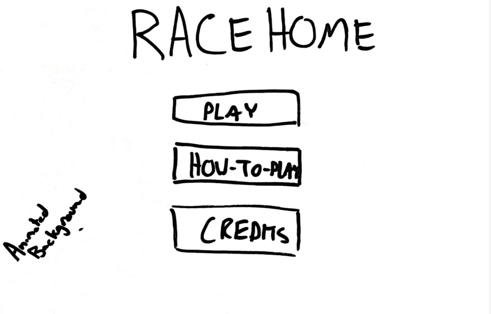
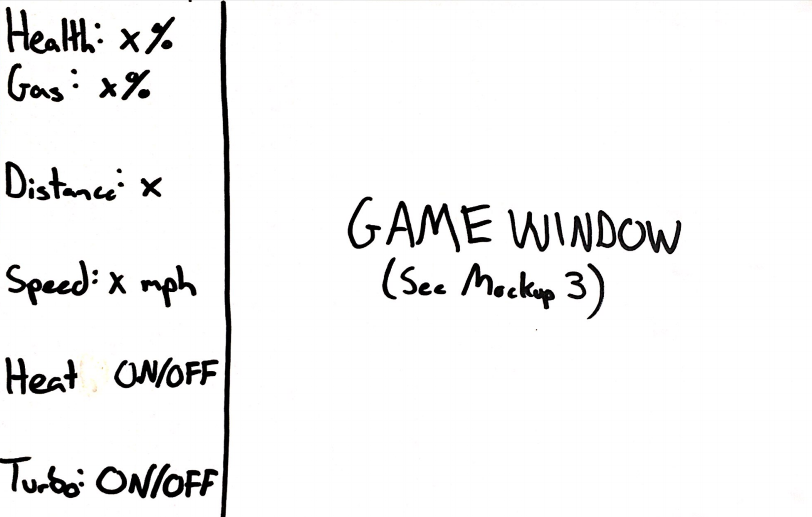
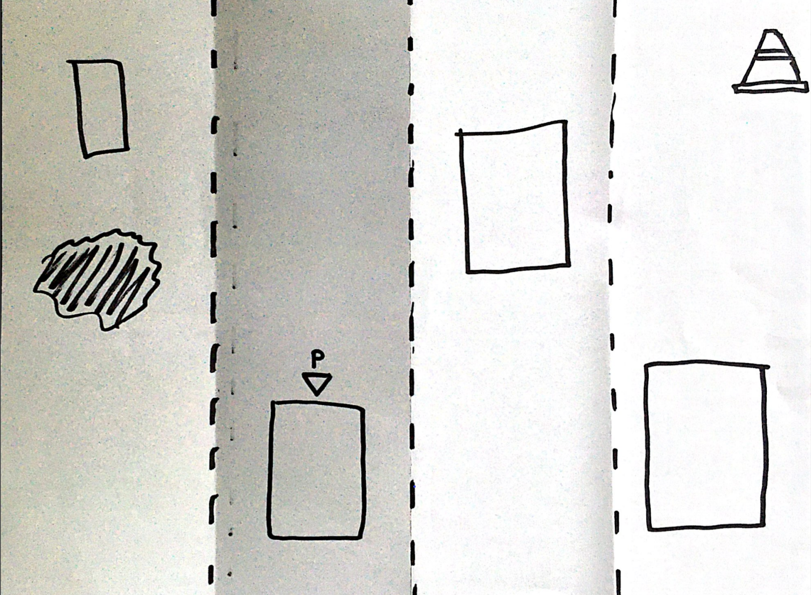

About
Credits
High Concept
While avoiding other cars and road hazards, the player must drive home as quickly as possible.
Genre
Vertically scrolling racing-type gameplay.
Platform
Desktop.
Story
The player is driving on the highway from a variety of locations to their 'home'. Their goal is to travel as far as possible on their journey while avoiding other cars, potholes, traffic sections, police, and other hazards. The goal is to get as far as possible until the hazards catch up to the player.
Aesthetics
Graphics Style: 8-Bit
Sound: 8-Bit
Sound Types: Collisions, UI, Background Music, Ambient Sounds, Power Ups
Gameplay
Mechanics
The player drives along the highway with other drivers. As the player drives along, the game generates new cars, motorcycles, construction zones, potholes, and other hazards in which the player must avoid. If the player travels above the speed limit for an extended period of time, police will chase after the player. Construction zones have decreased speed limits of which the player must be aware of. There will be power ups along the way in which will fill the player's car's gas and health and give it other functional buffs. High score is determined by distanced traveled and the time in which the player did it in.
Control
W Move Up
A Move Left
S Move Down
D Move Right
E Speed Up
Q Slow Down
Onboarding
Instruction menu linked within the main menu.
Player Learning
The player must learn when to pass other cars and hazards and balance when it's worth taking damage to refill gas, or fix their car.
Mockups
  Other
PixiJS will be the driving library behind the functionality of the game.
About the Developer
I'm currently a second-year student at the Rochester Institute of Technology studying Game Design and Development. I'm actively seeking to work in the video game industry and hone my skills in my own time.
+ Everybody has a story to tell. I seek to tell my stories through video games and video game design.
+ I perform freelance work through graphics design, websites, application tools, and video game servers.
+ I take great pride in my work ethic as it has and will carry over into any task that I take on.
+ I actively build and manage Darkwater Entertainment, a video game server community with 300+ members where I actively create and develop websites, graphics, applications, and video game servers for personal gain.
PROGRAMMING COMPETENCIES: C#, HTML, CSS, Lua, Java, Python
TOOL COMPETENCIES: Microsoft Visual Studio, Unity, Adobe Suite, GameMaker Studio, Google Suite
I love to watch and play various sports and develop close relations with people. I get excited about opportunities to help others grow! I'm always looking to make new connections, so feel free to send me a note so that we can start talking!